🏡 Home > 🎶 Procédés d'accompagnement
🎶 Procédés d'accompagnement
Accords plaqués
État fondamental
Joués à l'état fondamental, avec ou sans retournements.
A1 - Noires
C1 - Croches
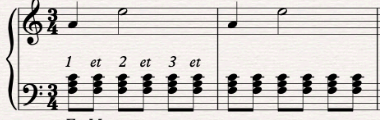
Sans la tierce
Joués à l'état fondamental, mais sans la tierce.
A2 - Noires
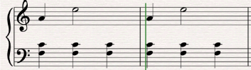
C2 - Croches
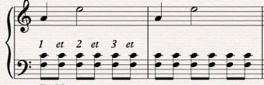
Fondamentale doublée
Joués à l'état fondamental, mais sans la tierce et on double la fondamentale à l'octave.
A3 - Noires
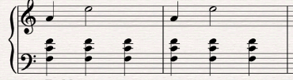
C3 - Croches
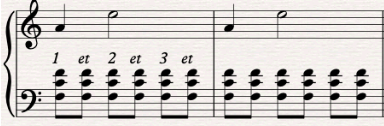
Avec déplacement
Effectuer un déplacement, en jouant des octaves de la tonique dans le registre très grave sur le premier temps, et en venant jouer l’accord à l’état fondamental une ou deux octaves. plus haut.
A4 - Avec déplacement
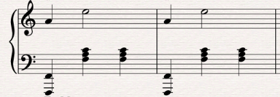
C4 - Avec déplacement
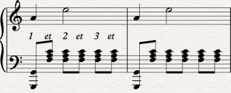
Arpèges main gauche
État fondamental
Joués à l'état fondamental, avec ou sans retournements.
B1 - Noires
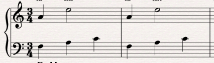
Fondamentale doublée
Joués à l'état fondamental, mais sans la tierce et on double la fondamentale à l'octave.
B3 - Noires
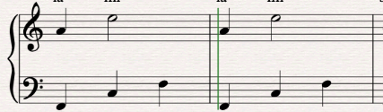
D3 - Croches
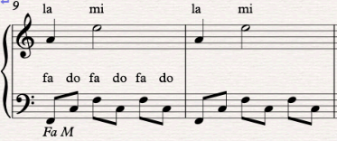
E3 - Doubles croches
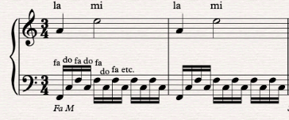
État fondamental et fondamentale doublée
Joués à l'état fondamental, mais on double tout de même la fondamentale à l'octave.
D5 - Croches
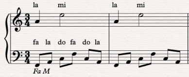
E6 - Doubles croches, mouvement ascendant
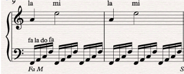
E7 - Doubles croches sur 2 octaves
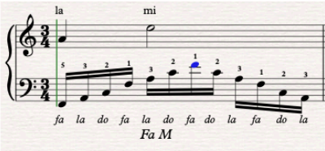